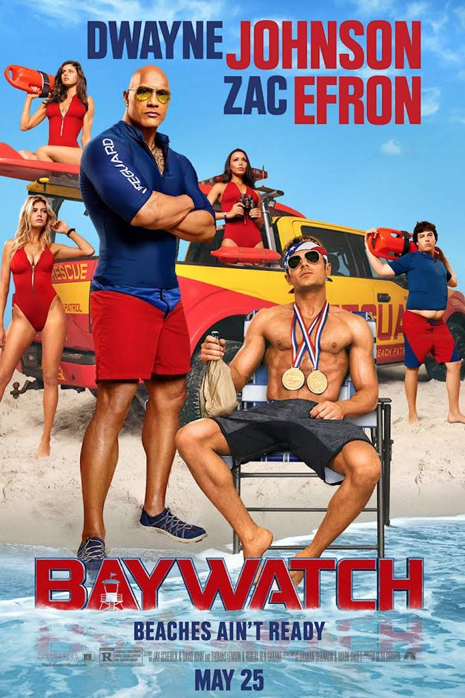

Date of Release : May 25, 2017
Cast :
- Dwayne Johnson as Mitch Buchannon
- Zac Efron as Matt Brody
- Priyanka Chopra as Victoria Leeds
- Alexandra Daddario as Summer Quinn
- Kelly Rohrbach as C. J. Parker
- Jon Bass as Ronnie
Description :
In Emerald Bay, Florida, Lt. Mitch Buchannon and his team of lifeguards, including second-in-commmand Stephanie Holden and veteran C. J. Parker, protect the beaches and the bay as part of an elite division known as Baywatch. Having made over 500 rescues in his career, Mitch is beloved by the community, to the annoyance of local beat cop Garner Ellerbee and Mitch's superior, Captain Thorpe. During one of his morning patrols, Mitch discovers a small pouch of drugs washed up near the Huntley Club, which is now under the ownership of businesswoman Victoria Leeds.